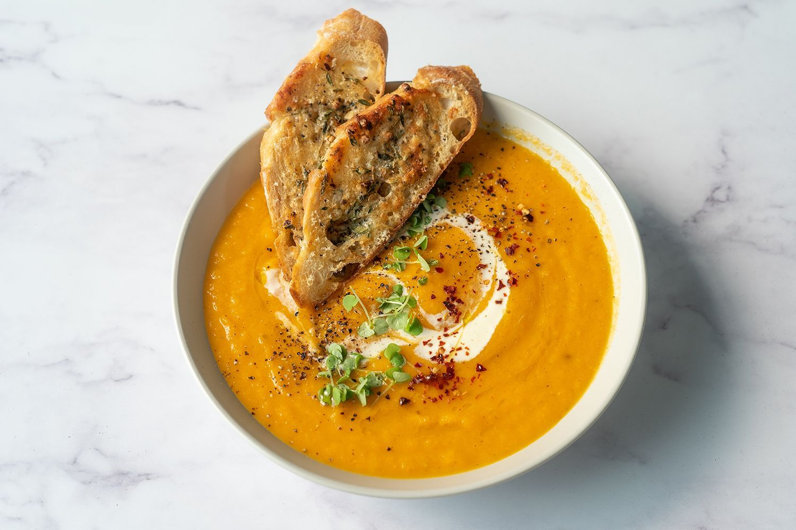

Pumpkin Soup

Description:
Pumpkin soup is sweet, creamy, easy to make and suitable for a warm lazy Sunday.
Ingredients:
- 6 cups chicken stock
- 4 cups pumpkin puree
- 1 cup chopped onion
- 1 clove garlic, minced
- 1 ½ teaspoons salt
- ½ teaspoon chopped fresh thyme
- 5 whole black peppercorns
- ½ cup heavy whipping cream
- 1 teaspoon chopped fresh parsley
Steps:
- Place chicken stock, pumpkin puree, onion, garlic, salt, thyme, and peppercorns in a large pot; bring to a boil. Reduce heat to low and simmer, uncovered, 30 minutes.
- Transfer soup to a blender or food processor in batches; blend until smooth. Return soup to the pan and bring to a boil; reduce heat to low and simmer, uncovered, for 30 minutes.
- Stir in heavy cream.
- Ladle soup into bowls and garnish with fresh parsley.